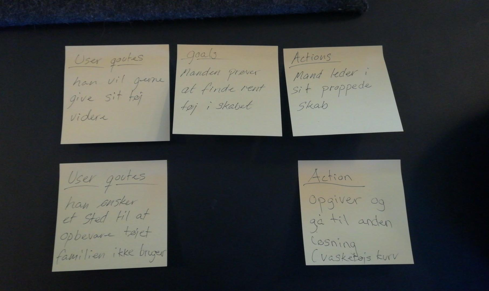
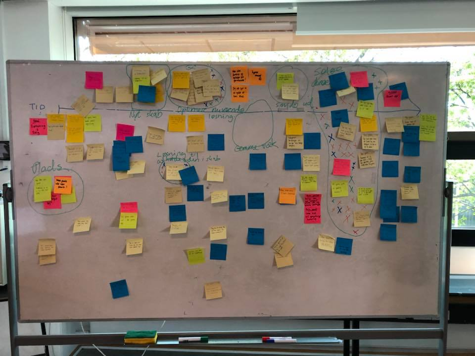

Experiencemap
 Pain point
- Kan ikke finde ud hvordan han donere/sælge sit tøj - 30 point
- Kan ikke optimere sin nuværende løsning - 9 point
User goals
- Når han har fundet ud af hvordan han sælger eller donere sit tøj
- Når han har solgt eller doneret sit tøj
- Når han får optimeret sit klædeskab
Problemformulering
Hvordan kan man lave en digital løsning, der gør det nemt og miljøvenligt
at donere eller sælge brugt tøj?